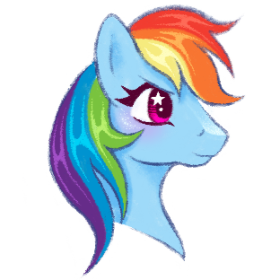
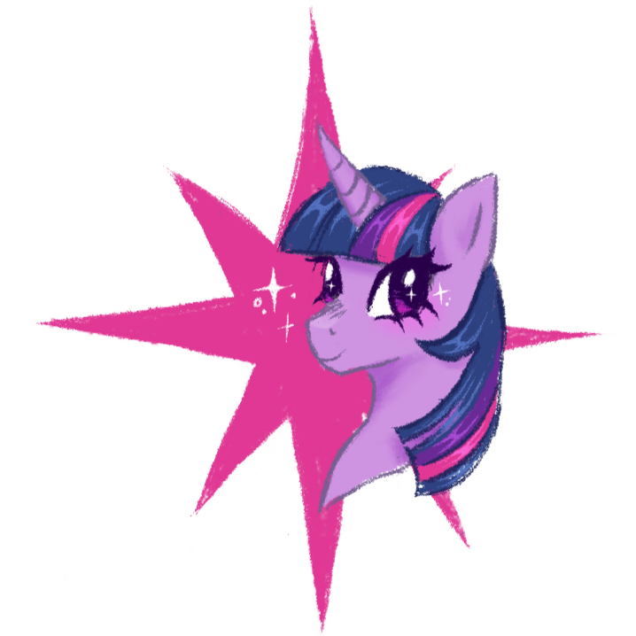
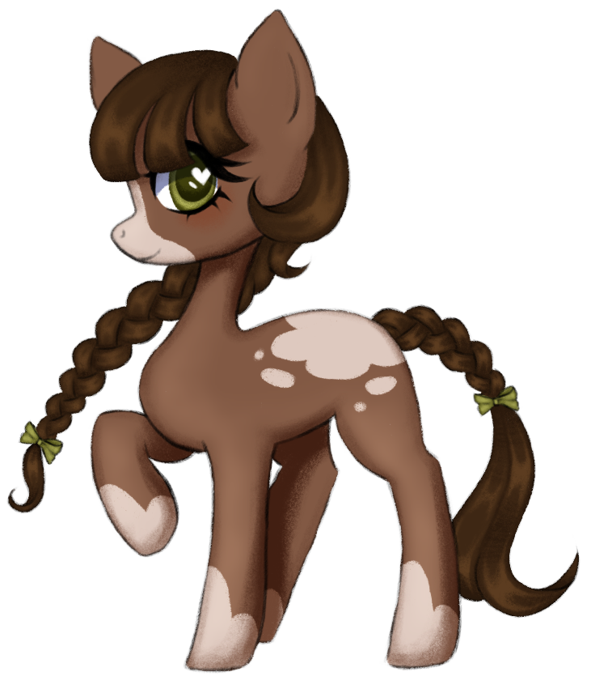

Take a gander at some of my pony doodles :3
PAPERTRAIL YASS |
 |
|---|---|
|  | Honestly, Rainbow Dash was never my favourite when I was growing up, I didn't dislike her, but she wasn't my fave. I found her arrogant and abraisive, but over the years she's grown on me, especially her design |
I've always loved Twilight, she was everything I wanted to be when I was younger. Her anxieties always hit a little too close to home, although we deal with them in different ways. I wish she didn't become a princess so soon, and that when she did become a princess I wish her friends joined her. At the end of the series we can see the others have visibly aged, but she's only grown bigger, much like Celestia :( |
 |
|  | My mom bought me the my little pony roleplaying game (basically dnd but ponies) for my birthday! I havent gotten a chance to play it yet (mainly because I'm hesitant to dm a game myself) but this is a pony I designed for fun using the rules :) I tried to stay closer to the show's artstyle, but I think it would've been better if I drew it in my own style |